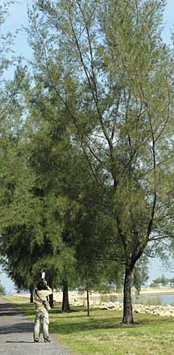
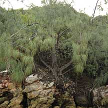
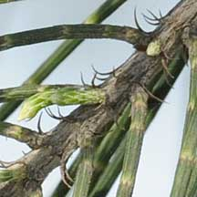
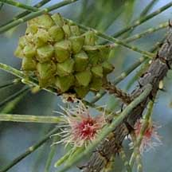
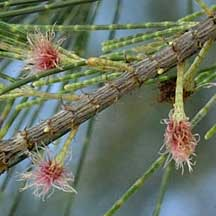
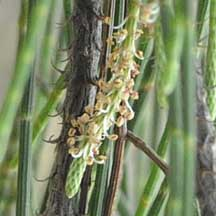
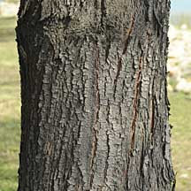
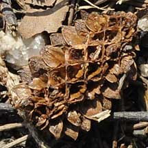

|
|
| plants text index | photo index |
| coastal plants |
| Rhu or Casuarina
tree Casuarina equisetifolia Family Casuarinaceae updated Oct 2016 Where seen? This tree with delicate needle-like twigs and distinctive cones is commonly grown on our seaside parks. It is also often seen growing wild on our shores. According to Hsuan Keng, these trees were probably wild originally between Tanjung Rhu and Changi. Tanjung Rhu has since been reclaimed and the East Coast Highway now lies on the the reclaimed land. According to Giersen, it is found on sandy or rocky beaches and back mangroves. According to Burkill, the tree "demands sandy shores and is limited in a wild condition in Malaya" but planted extensively. According to Giersen, it is common on sandy coasts, low dunes and sandy mangroves. Originally from India, the Pacific Islands, northeastern Australia and throughout Southeast Asia. They have also be introduced in many other countries. According to Corners, the seeds sprout in hot, open sand above the high-water mark and the young plants grow quickly, often form a thicket that eventually forms a Casuarina forest. The plants cannot settle under shade and thus form only on sandy shores that are advancing into the sea. In a suitable spot, the tree grows rapidly. The tree is also often planted inland, not so much for its shade but more as a wind break. "While the wind may blow hats off on the shore", behind a depth of three Casuarina trees, the air is "still and heavy". This is attributed to the fine twigs that break the wind. At first sight mistaken for a conifer (a non-flowering plant), this tree is actually a flowering plant. While the pine-needles of a conifer are true leaves, those of the Casuarina are merely twigs, with the leaves reduced to tiny teeth. The most common species is Casuarina equisetifolia (which some say should be called C. littorea) which has narrow, unbranched needle twigs, while the other species have branched or thicker twigs. Features: Large tree up to 50m tall with a girth up to 3m. Bark brown, ridged and fissured, flaky in oblong pieces. The Casuarina also harbours nitrogen fixing bacteria in nodules in its roots, thus allowing it to grow in apparently infertile areas. Leaves are reduced to tiny, pointed scales arranged in whorls of 6-10 at the joints of twigs. The 'needle-twigs' are greenish and photosynthesis takes place in these twigs instead of the tiny leaves. The flowers are tiny and wind pollinated. Male and female flowers usually grow on separate trees. The tiny male flowers appear on short spikes (1.5-3cm long). Female flowers appear as pink fluffy bits on a short stalk. These turn into green cones. When ripe, the cones turn brown and the bracts on the cone open up, releasing small winged nuts. The cones are dispersed by water. Human uses: According to Burkill, the tree was planted where it was desired to allow the soil to dry, as well as to check erosion and to fix drifting sand. It was also planted in India as firewood. Some consider it the best firewood as it will burn even when green. The timber is stronger than teak but splits much. It is sometimes used for beams and rafters, as well as for masts and other heavy duty uses. The bark is used to treat dysentery and diarrhoea, the twigs to treat swellings. According to Giersen, the heavy hard timber makes excellent firewood and charcoal and is sometimes used as beams. The bark yields a resin that is useful for tanning. |
 Pulau Semakau, Mar 09  Growing on rocky shore. St. John's Island, Aug 09  True leaves reduced to tiny scales. Pulau Semakau, Mar 09 |
|
 Young fruit. Pulau Semakau, Mar 09 |
 Female flowers. Pulau Semakau, Mar 09 |
 Male flowers. Pulau Semakau, Mar 09 |
|
 Pulau Semakau, Mar 09 |
 Fallen fruit, split open to release seeds. Pulau Semakau, Mar 09 |
| Casuarina trees on Singapore shores |
| Photos of Casuarina trees for free download from wildsingapore flickr |
| Distribution in Singapore on this wildsingapore flickr map |
|
Links
References
|
|
|